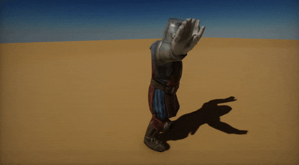

Animation

One of the most fundamental parts of every game are animations. Flax Engine features a high quality and performant animation system that helps developers achieve life-like characters and animations. This documentation section describes how to work with the Flax animation pipeline. Follow the guidelines and tutorials to create your very own animated characters.
Note
As a starting point, we recommend checking out the following tutorial: How to setup animated model.